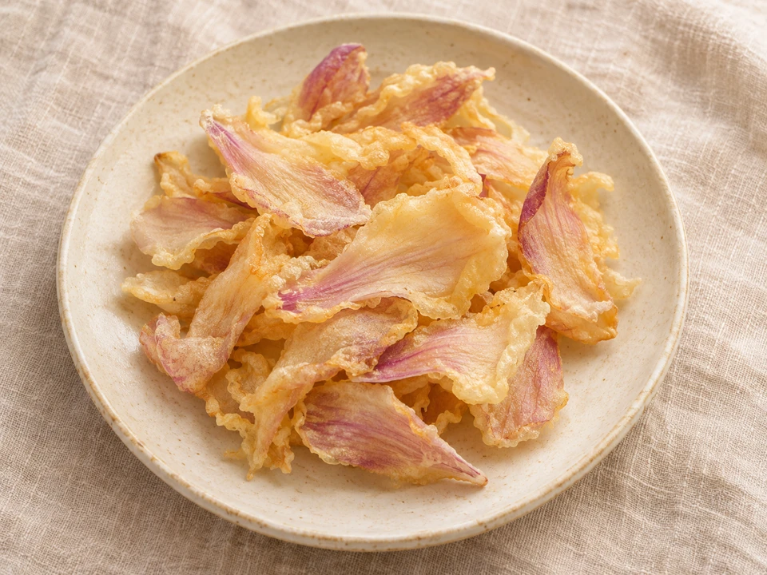

BLOOM TO TABLE
酥炸辛夷花
选用确认可食用的花瓣，清洗沥干后裹薄面糊炸熟，呈现轻薄酥香的口感。
食用花瓣 · 地方小食 · 家常做法参考
准备食材
- 经可靠食用渠道确认的可食用辛夷花瓣
- 面粉、鸡蛋、清水
- 食用油，少量盐或糖
制作步骤
- 花瓣逐片洗净并按食用原料说明处理，充分沥干表面水分。
- 面粉、蛋液与清水拌匀，调成能薄薄附着花瓣的面糊，按口味加入少量盐或糖。
- 花瓣逐片裹薄糊，分批下油锅，避免粘连与油花飞溅。
- 炸至外层定型、两面浅金黄且内部熟透，捞出沥油，稍放凉后品尝。
仅使用可靠食用渠道确认可食用的花瓣，并按原料说明处理。药用干燥辛夷花蕾、观赏及绿化花材不能替代。以下为地方食俗启发的家常做法参考。 用量可按人数与口味调整。
地方食俗依据：四川画报《春日限定 四川滋味》。资料记载当地花食，具体步骤由本站整理，非标准工艺配方。